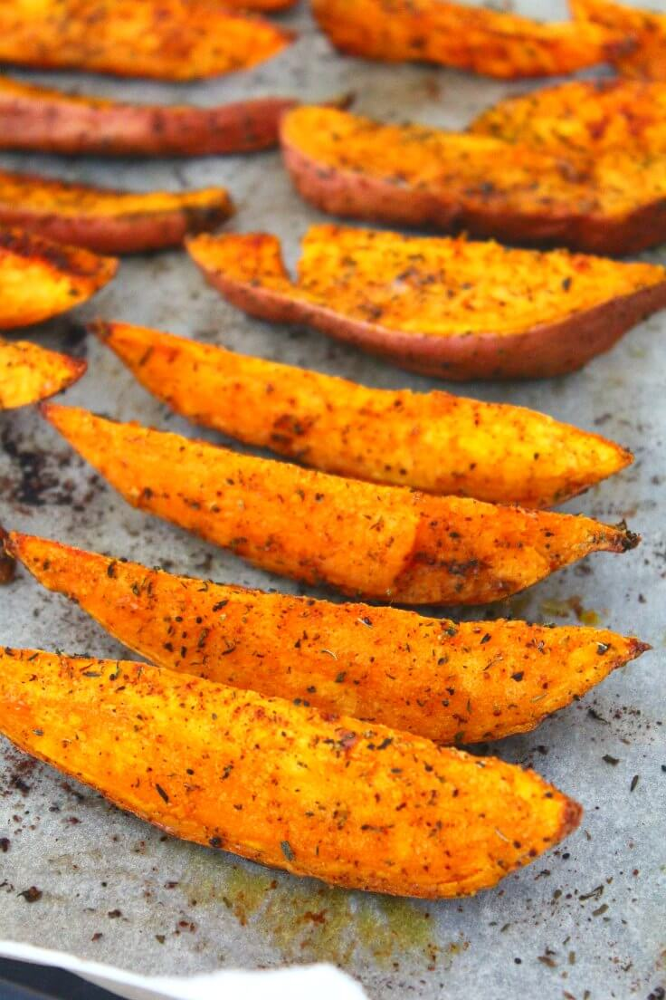

Spicy Grilled Sweet Potato Wedges

Description
The delicious wedges are made using sweet potatoes with a slight
spicy touch.
Ingredients
- 2 tablespoons olive oil
- 2 teaspoons hot sauce
- 1/2 teaspoon cumin
- 1/2 teaspoon dried thyme
- 1/2 teaspoon paprika
- 1/2 teaspoon garlic powder
- 1/2 teaspoon salt
- 1 large sweet potato, cut into wedges
Instructions
- Preheat an outdoor grill for medium heat and
lightly oil the grate
- Whisk olive oil, hot sauce, comun, thyme, paprika,
garlic powder, and salt together in a large bowl.
Add sweet potato wedges and stir until wedges are
evenly coated.
- Place sweet potato wedges on the preheated grill
and cook for 5 minutes. Flip wedges with tongs
and cook 5 additional minutes.